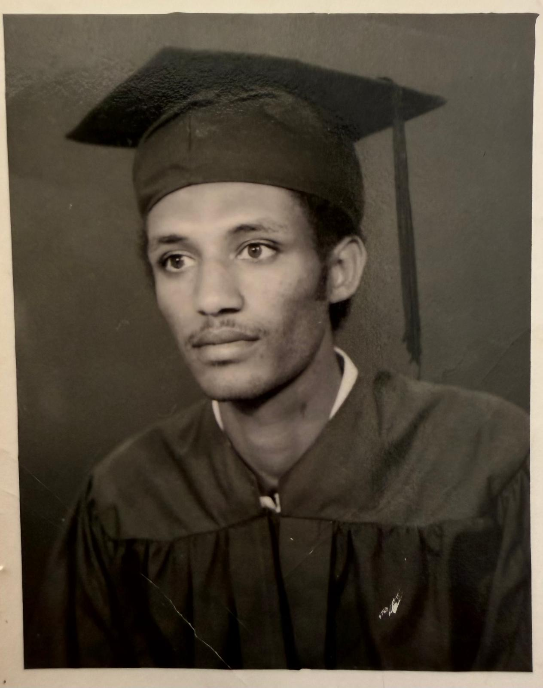
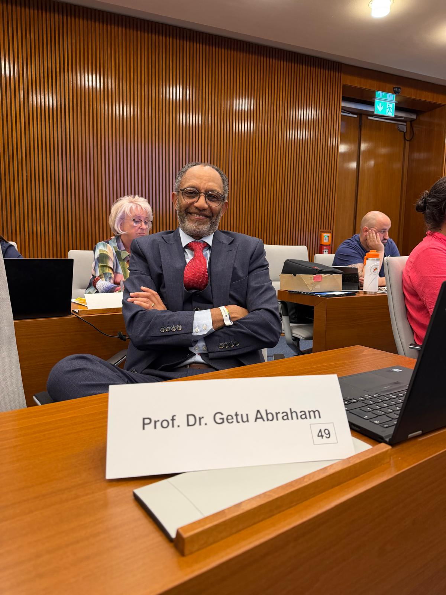
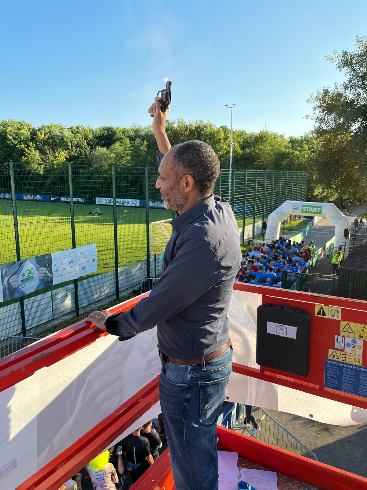

Persönliches
Aus Geschichte wird Zukunft
Es war Freitag, der 18. August 1989, als ich in Leipzig am Hauptbahnhof aus dem Zug stieg. Ich war ein junger College-Student aus Äthiopien und gerade dabei, auf einem fremden Kontinent ein neues Leben anzufangen. Meine Ausstattung dafür war überschaubar: eine kleine Fahrtskizze, 50 Dollar in der Tasche und ein Koffer, der auf der langen Reise schon ein wenig von seiner ursprünglichen Form eingebüßt hatte.
Meine Geschichte lesen
Ankommen
Mein Weg hatte mich zunächst nach Ost-Berlin geführt. Von dort war ich mit dem Zug nach Leipzig gefahren, wo ich gegen Mitternacht ankam. Was heute nach einer kurzen Etappe klingt, war für mich damals eine Reise ins vollkommen Unbekannte. Ich sprach kein Deutsch. Niemand wartete am Leipziger Hauptbahnhof mit einem Namensschild auf mich und der Bahnhof erschien mir in jener Nacht vermutlich noch größer, als er ohnehin ist: Die langen Bahnsteige, die gewaltige Halle, Lautsprecherdurchsagen in einer Sprache, von der ich kein Wort verstand. Menschen gingen mit Taschen und Koffern in verschiedene Richtungen und schienen, anders als ich, ziemlich genau zu wissen, wohin sie gehörten. Auch von meinen Englischkenntnissen ließ sich Leipzig nicht sonderlich beeindrucken.
Mein Ziel kannte ich immerhin: das Studentenwohnheim in der Straße des 18. Oktober. Ich musste nur noch dorthin gelangen. Also hinaus auf die Westseite des Hauptbahnhofs. Dort rumpelten die Leipziger Tatras über die Gleise, jene kantigen, elfenbeinfarbenen Straßenbahnen mit ihren blauen Zierstreifen, die 1989 zum Stadtbild gehörten. Irgendwann hielt eine Bahn, nur öffnete sich keine ihrer Türen. Die nächste Bahn kam. Wieder wartete ich. Wieder blieb die Tür verschlossen. Dass man die Tür per Knopfdruck selbst öffnen musste, war auf meiner kleinen Fahrtskizze nicht vermerkt.
So stand ich nachts in einer vollkommen fremden Stadt vor einer Straßenbahn, die mich durchaus hätte mitnehmen können, wenn ich nur gewusst hätte, wie man hineinkommt. Dann wollte jemand aussteigen. Die Tür ging auf. Und ich nutzte meine erste echte Chance in Leipzig und stieg ein.
An diese erste Leipziger Nacht denke ich bis heute gern zurück. Vielleicht auch deshalb, weil sie im Kleinen schon einiges enthielt, was ich später in dieser Stadt immer wieder erleben sollte: Man versteht nicht sofort alles. Man kennt den Weg noch nicht. Und manchmal braucht es zunächst nur eine einzige offene Tür.
Dass ich ausgerechnet im August 1989 nach Leipzig gekommen war, konnte ich damals in seiner ganzen Bedeutung kaum überblicken. Die Stadt wirkte in jener Nacht nicht wie ein Ort unmittelbar vor einem historischen Umbruch. Der Alltag ging weiter. Straßenbahnen fuhren, Züge kamen an, Menschen gingen zur Arbeit oder waren noch in den Sommerferien. Und doch war in diesem Sommer längst etwas in Bewegung geraten. DDR-Bürger verließen über Ungarn das Land, andere suchten Zuflucht in westdeutschen Botschaften. Manche waren in den Urlaub gefahren und nicht zurückgekehrt. Wenige Wochen später würden sich auch in Leipzig immer mehr Menschen auf die Straße wagen.
Davon wusste der junge Mann mit dem lädierten Koffer in jener Nacht natürlich wenig.
Meine Revolutions-Losung hieß zunächst: Lerne Deutsch!

Lernen und Lehren
Am Herder-Institut begann die Vorbereitung auf mein Studium mit einem Intensivkurs – eine harte, aber sehr produktive Zeit. Wer eine völlig neue Sprache nicht nebenbei, sondern möglichst schnell als Voraussetzung für ein Studium lernen muss, bekommt ohnehin eine frühe Lektion in Ausdauer.
Drei Monate später bekam ich im Unterricht die Aufgabe, einen Vortrag über Leipzig zu halten. Also begann ich, mich genauer mit dieser Stadt zu beschäftigen. Ich lernte ihre Geschichte kennen und entdeckte, was Leipzig alles war: Messe- und Handelsstadt, Kultur- und Musikstadt, Sportstadt, Universitäts- und Buchstadt. Damals waren das für mich zunächst Erkenntnisse für meinen Vortrag. Sie bescherten mir eine Eins.
Natürlich hat mich das damals glücklich gemacht, als dauerhafter erwies sich allerdings eine andere Nebenwirkung dieser Aufgabe: Die Faszination für Leipzig hatte sich in mir festgesetzt.
Und ich blieb.
Ich durfte an der Universität Leipzig eine hervorragende tierärztliche Ausbildung erhalten. Ich wurde Tierarzt, forschte am Pferd, promovierte und habilitierte. Später wurde aus dem Studenten selbst ein Hochschullehrer. Seit vielen Jahren bilde ich nun an der Universität Leipzig junge Tierärztinnen und Tierärzte mit aus. Ich begleite junge Wissenschaftler auf ihrem Weg und manchmal sogar so weit, bis aus wissenschaftlichen Erkenntnissen und einer guten Idee eine eigene Firma entsteht.
Selbstverständlich waren die Tiere immer dabei. Wer sein Berufsleben mit ihnen verbringt, lernt eine gewisse Nüchternheit. Ein Pferd lässt sich von akademischen Titeln nur begrenzt beeindrucken. Ihm ist wichtiger, ob der Mensch vor ihm weiß, was er tut. Diese Art der unmittelbaren Rückmeldung ist gelegentlich auch außerhalb der Veterinärmedizin ganz hilfreich.

Heimat Leipzig
Während meines eigenen Weges veränderten sich Leipzig, Deutschland und Europa grundlegend. Nur wenige Wochen nach meiner Ankunft begann Leipzig, jene Geschichte zu schreiben, die heute untrennbar mit dem Namen der Stadt verbunden ist.
Und auch danach blieb Leipzig nicht stehen.
Die Stadt, in die ich 1989 gekommen war, hatte vielerorts graue und beschädigte Fassaden, ganze Straßenzüge warteten auf Sanierung. Heute ist Leipzig gewachsen, internationaler geworden und für Menschen aus sehr unterschiedlichen Teilen der Welt ein Ort zum Studieren, Arbeiten und Leben. Studierende und Wissenschaftler gehören ebenso dazu wie Handwerker, Kreative, Unternehmerinnen und Unternehmer und all jene Menschen, die diese Stadt jeden Morgen in Gang setzen.
Vieles, was heute selbstverständlich erscheint, ist es für mich gerade deshalb nicht. Vielleicht erklärt das auch meine Dankbarkeit gegenüber Leipzig.
Diese Stadt hat mir die Möglichkeit gegeben zu studieren, wissenschaftlich zu arbeiten, beruflich meinen Platz zu finden, viele Menschen kennenzulernen, Freunde zu gewinnen und schließlich heimisch zu werden. Heimat ist für mich deshalb weniger eine Frage dessen, wo eine Biografie beginnt. Sie entsteht dort, wo Menschen einem zutrauen, Teil ihrer gemeinsamen Geschichte zu werden. Das habe ich in Leipzig erfahren.
Glaube und Miteinander
Mein christlicher Glaube gehört zu meinem Leben. Er ist für mich weder Etikett noch moralisches Gütesiegel. Aus ihm kommt meine Überzeugung, dass Menschen füreinander da sein und sich gegenseitig unterstützen sollten. Nächstenliebe verstehe ich als soziale Verpflichtung. Der Wert eines Menschen hängt nicht von seinem Einkommen ab, nicht von Herkunft oder Bildung und auch nicht davon, welche politische Meinung er vertritt. Menschenwürde ist universell und unantastbar.
Das prägt meine Vorstellung davon, wie wir in Leipzig miteinander umgehen sollten. Unterschiedliche Interessen gehören zu einer Großstadt. Streit ebenfalls. Man kann in einer Sache sehr verschiedener Meinung sein und dem anderen trotzdem mit Respekt begegnen. Entscheidend ist, ob man danach noch miteinander an einem Tisch sitzen und nach einer Lösung suchen kann. Vielleicht kommt an dieser Stelle auch der Wissenschaftler in mir durch.
Verantwortung übernehmen
Mein wissenschaftlicher Hintergrund hat mich gelehrt, zunächst genau hinzusehen. Daten gehören dazu. Ebenso wichtig ist es, Menschen vor Ort zu fragen und Fachleute hinzuzuziehen. Dann werden Lösungsansätze erprobt und Ergebnisse überprüft. Was funktioniert, kann ausgebaut werden. Was nicht trägt, muss verändert oder beendet werden.
Wissenschaft funktioniert schließlich nicht dadurch, dass jemand besonders überzeugt von seiner ersten Idee ist. Eine Idee muss der Wirklichkeit standhalten.
Diesen Anspruch habe ich auch an kommunale Entscheidungen. Bei größeren Vorhaben möchte ich wissen, welches konkrete Problem gelöst werden soll, welches Ziel wir verfolgen und wer für eine Entscheidung verantwortlich ist. Und vor allem: Woran können die Leipziger später erkennen, ob tatsächlich etwas besser geworden ist?
Aus politischen Zielen müssen überprüfbare Aufgaben werden und Verantwortung muss erkennbar bleiben.
Verwaltung sollte für Menschen ohnehin nicht abstrakt sein. Spätestens wenn man vor einer verschlossenen Tür steht, wird sie sehr konkret.
Ich trete parteiunabhängig als Kandidat für das Amt des Oberbürgermeisters an. Diese Unabhängigkeit gibt mir die Freiheit, von der Sache aus zu denken und gute Ideen danach zu beurteilen, was sie für die Menschen in Leipzig bewirken können. Als Oberbürgermeister und Verantwortlicher für die Verwaltung möchte ich die Dienstleistungen der Stadt gemeinsam mit den Leipzigern und ihren gewählten Vertretern langfristig gestalten. Dazu gehört für mich auch, über Fraktionsgrenzen hinweg zusammenzuarbeiten.
Meine Kandidatur verstehe ich als ein Angebot aus der Mitte der Leipziger an die ganze Stadt. Meine Loyalität gilt keinem Parteiprogramm, sondern der Verantwortung für Leipzig, für das, was bereits gut funktioniert, und für das, was wir gemeinsam besser machen können.

Ausdauer
Vielleicht spielt dabei auch eine Rolle, dass ich seit vielen Jahren Langstrecken- und Ausdauerläufer bin.
Wer lange Strecken läuft, entwickelt ein ziemlich realistisches Verhältnis zu großen Ankündigungen. Nach Kilometer zweiunddreißig helfen sie wenig. Dann zählen Vorbereitung, ein vernünftiges Tempo und die Bereitschaft weiterzulaufen.
Zuversicht bedeutet für mich deshalb auch nicht, Schwierigkeiten kleinzureden. Ich möchte sie verstehen, Wissen nutzen und gemeinsam mit anderen nach Lösungen suchen. Neugierig zu bleiben, gehört für mich ebenso dazu wie die Bereitschaft, eine eigene Annahme zu korrigieren, wenn die Wirklichkeit etwas anderes zeigt.
Etwas zurückgeben
Vor allem aber kenne ich Leipzig inzwischen seit mehr als drei Jahrzehnten.
Ich kenne diese Stadt nicht aus einer einzigen Perspektive. Ich habe sie als Fremder betreten und als Student entdeckt. Hier wurde ich Tierarzt und Wissenschaftler, Hochschullehrer, Kollege, Freund und schließlich Leipziger.
Noch immer kann ich mich ziemlich genau an den jungen Mann erinnern, der am 18. August 1989 aus Äthiopien nach Leipzig kam und der an jenem Abend noch nicht wissen konnte, dass diese fremde Stadt einmal seine Heimat sein würde.
Dass sie es geworden ist, empfinde ich bis heute als großes Glück.
Leipzig hat mir viel gegeben. Bildung und berufliche Möglichkeiten gehören dazu, aber mindestens ebenso wichtig waren die Menschen, die mir begegnet sind, mich unterstützt haben und aus einer Stadt, in der ich mich erst noch zurechtfinden musste, nach und nach einen vertrauten Ort gemacht haben.
Deshalb möchte ich dieser Stadt etwas zurückgeben und mich mit meinem ganzen Engagement für sie einsetzen. Gemeinsam mit den Leipzigern, mit ihren Erfahrungen, Wünschen und Ideen möchte ich daran arbeiten, dass Leipzig auch in einer sich schnell verändernden Welt eine lebenswerte, offene und starke Stadt bleibt.
Und vielleicht ist es nach all den Jahren tatsächlich ganz passend, dass meine Geschichte mit Leipzig vor einer verschlossenen Straßenbahntür begann. Sie ist für mich schließlich aufgegangen.
